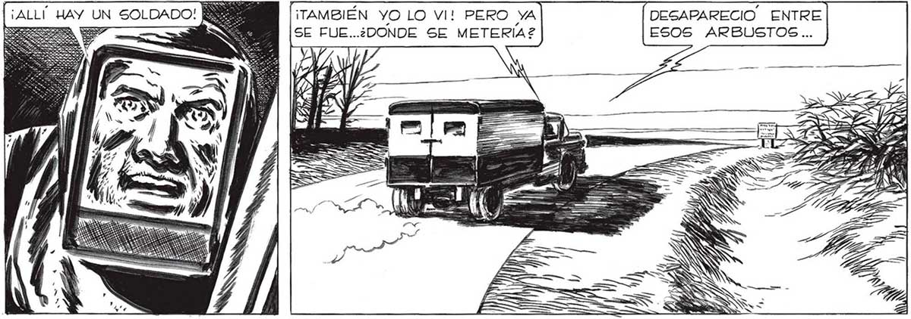
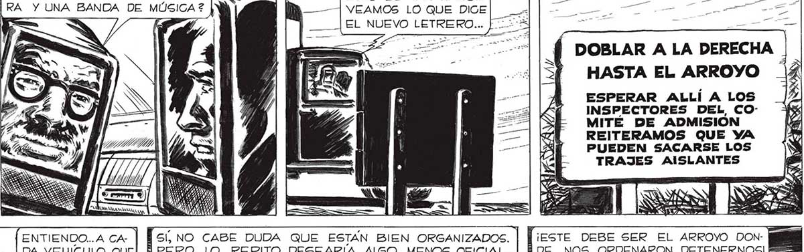
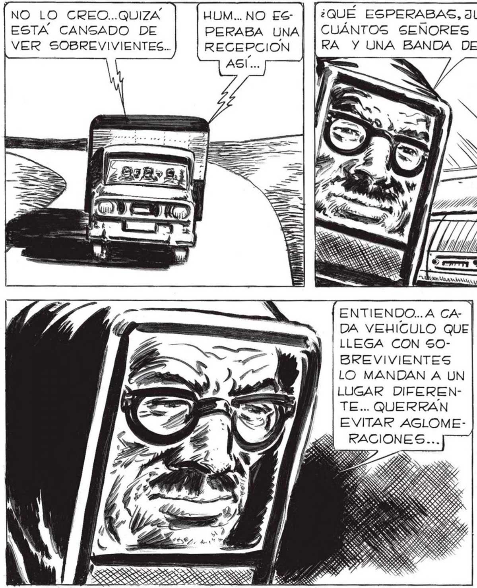

¡ALLÍ HAY UN SOLDADO! ¡TAMBIÉN YO LO VI! PERO YA DESAPARECIO. ENTRE | PERO DEJO. PUESTO ¿POR QUÉ SE ¡RIA TAN Rap] 3997 : SE FUE...¿DONDE SE METERÍAZ2 ESOS ARBUSTOS... UN LETRERO... DO? ¿NOS TENDRIA MIEDO? — - 3 A FARANA NO LO CREO..QUIZA | [Wum..NO ES- | [:QUÉ ESPERABAS, JUAN? ¿UNOS ESTA CANSADO DE PERABA UNA| | CUÁNTOS SEÑORES CON GALEVER SOBREVIVIENTES... RECEPCION RA Y UNA BANDA DE MÚSICA ? VEAMOS LO QUE DICE ASÍ... EL NUEVO LETRERO... | HASTA EL ARROYO ESPERAR ALLÍ A LOS INSPECTORES DEL, COMITE DE ADMISIÓN REITERAMOS QUE YA PUEDEN SACARSE LOS TRAJES AISLANTES sí, no CABE DUDA QUE ESTÁN BIEN ORGANIZADOS. | | ¡EsTe DEBE SER EL ARROYO DONPERO, LO REPITO, DESEARÍA ALGO MENOS OFICIAL...| [DE NOS ORDENARON DETENERNOS! B = EE = ¡IPR ITS a ==> pl == == > ENTIENDO... A CADA VEHICULO QUE LLEGA CON 50BREVIVIENTES LO MANDAN A UN LUGAR DIFERENTE... QUERRÁN EVITAR AGLOMERACIONES... al É / 9 SS óS ESSE ISS >


